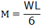
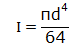
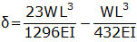
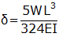
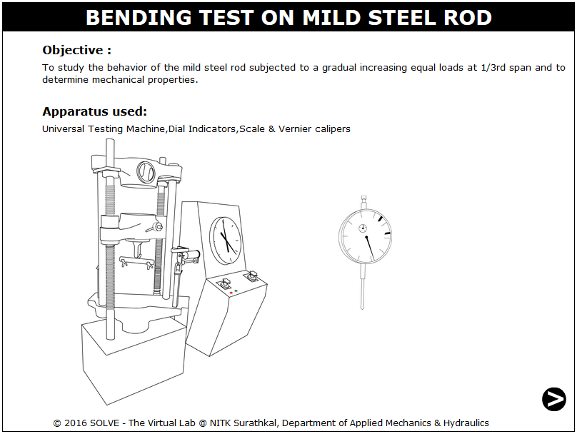
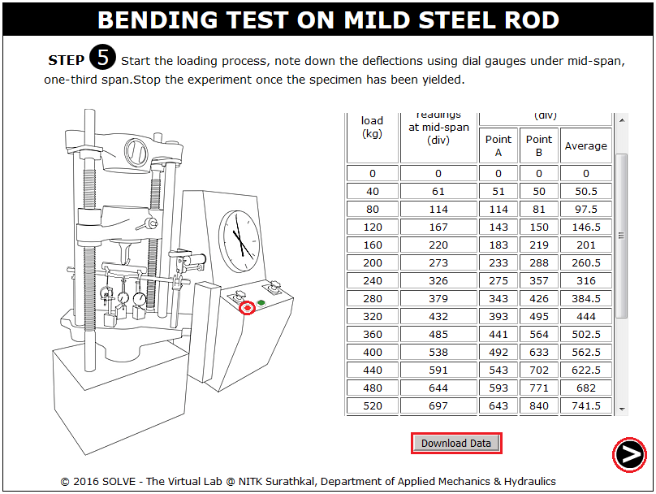
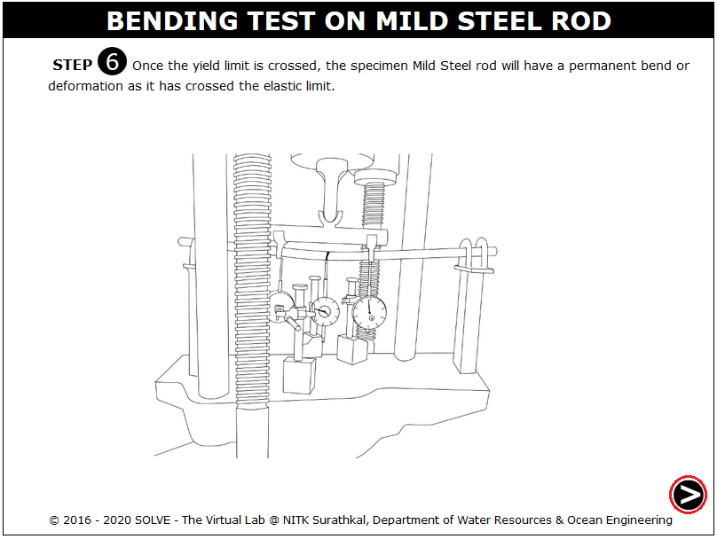
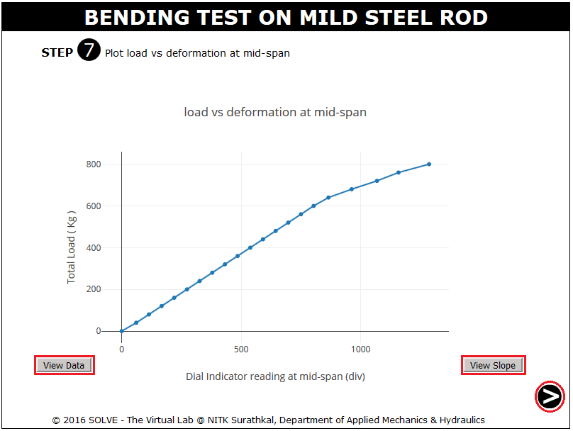
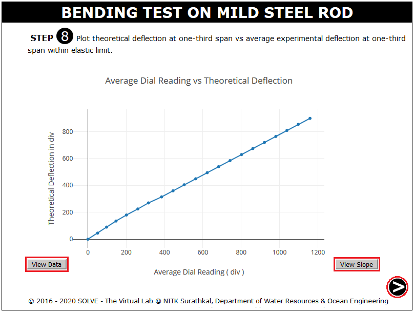
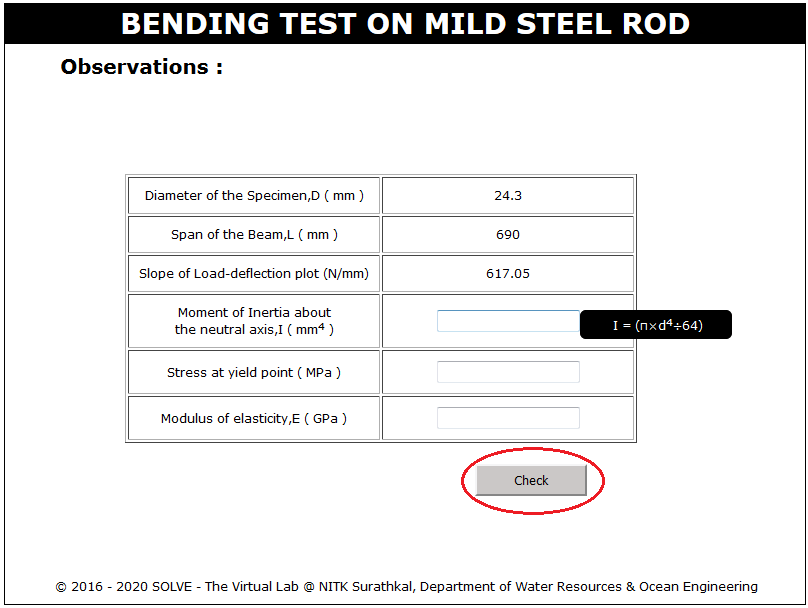

Bending strength is defined as a material's ability to resist deformation under load, it represents the highest stress experienced within the material at its moment of rupture. There are two types of bending tests. Three point bending test and four point bending test. In a three point bending test the area of uniform stress is quite small and concentrated under the centre loading point. In a four point bending test, the area of uniform stress exists between the inner span loading points (typically half the outer span length).
When a specimen is bent, it experiences a range of stresses across its depth. At the edge of the concave face the stress will be at its maximum compressive value. At the convex face of the specimen the stress will be at its maximum tensile value. Most materials fail under tensile stress before they fail under compressive stress, so the maximum tensile stress value that can be sustained before the specimen fails is its flexural strength. The flexural strength would be the same as the tensile strength if the material were homogeneous. Therefore the flexural properties of a specimen are the result of the combined effect of all three stresses as well as (though to a lesser extent) the geometry of the specimen and the rate the load applied. Bend testing provides insight into the modulus of elasticity and the bending strength of a material.
From bending equation,
Two point loads ‘P/2’ are applied at a distance of 1/3 L from the ends.
The moment due to two point loads P/2 at 1/3rd span is  and moment of inertia about the neutral axis is
Then the yield stress is
Then to determine the deflection at the centre of the span,
Deflection with respect to A is = moment of M/EI diagram between AE about A
Then the deflection at B above E is =moment of M/EI diagram between BE about B

The deflection of B below A= 
Then the deflection under point load P/2 at B is 
TEST PIECE:Round, square, rectangular or polygonal sections are used in this test. Any areas of the material affected by shearing or flame cutting and similar operations during the cutting of the test piece shall be removed. The edges of rectangular test pieces shall be rounded to a radius not exceeding one-tenth of the thickness of test pieces. During bending the unmachined side of the test piece shall be at the tension side.
The variation of modulus of rupture with position of application of load:- IS 5242 (1979): Method of test for determining shear strength of metals.

OBJECTIVE: To study the behaviour of mild steel rod subjected to gradual increasing equal loads at 1/3rd span and to determine its mechanical properties. STEPS:
- When you click on a Bending test on mild steel, a new window will open as shown below.

- Click on the NEXT button at the bottom right corner to move to the next step.

- Click on the specimen, then to measure the diameter click on vernier calliper, and then click on NEXT button.

- Click on measuring scale to measure the length of the specimen.

- Here, click on hand to mark center and 1/3rd points on the specimen to mount dial gauge.

- Click on chalk marked specimen to keep it in experimental setup.

- To start the loading click on GREEN button.

- Click RED button to stop the loading process, click download data to download the test observations.

- The failure pattern of the specimen is shown here, click NEXT button to view the graphs.

- Click on VIEW DATA to view the test observations and VIEW SLOPE to view the slope drawn to the plot.

- Click on VIEW DATA to view the test observations and VIEW SLOPE to view the slope drawn to the plot, then click NEXT button.

- Enter the calculated value and then click CHECK to verify the result.



- What is bending strength?
- Which type of load is applied here?
- Which is the IS code used for bend test on steel?
- What is the equation governing simple bending?
- How is the failure of ductile and brittle materials under bending load?

Check your ability to answer some of the questions relevant to the simulation that you used.
Get Started

- IS: 1599(1985): Method for Bend Test, Second Revision, Third Reprint ,February 1997.
- E.J.Hearn, Mechanics of Material, Pergaman Press, England,1972.
- F.P.Beer and E.R.Johnston, Mechanics of Material, 3rd Edition, Tata McGraw Hill, New-Delhi, 2007.
- F.L. Singer. Strength of Materials, Harper and Row Publishers.
- G.E. Diater, Mechanical Metallurgy, SI Metric Edition, McGraw – Hill.